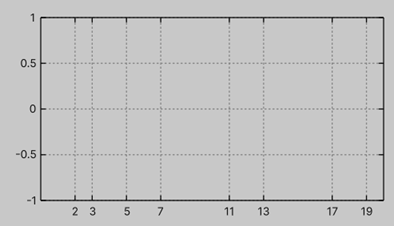

Custom tics provider
In the section Tutorial/Tics, you can find basic information about tic configuration for the axis.
Here, we will show how to implement a custom ITicsProvider.
The interface requires two elements: a Version property and a GetTics(float2) method.
The Version property is used internally for optimization (e.g. caching tic labels).
Increase its value whenever the tics need to be regenerated.
The GetTics(float2) method returns an IReadOnlyList<Tic>.
Most built-in implementations internally use a List<Tic> for caching.
The method parameter represents the current axis view range, where .x is the minimum value and .y is the maximum value.
Below is an example of a custom ITicsProvider that renders tics only for prime numbers1:
public class TicsProviderPrimes : ITicsProvider
{
private static bool IsPrime(int n) => n > 1 && Enumerable.Range(2, (int)math.sqrt(n) - 1).All(i => n % i != 0);
private static readonly bool[] primes = new bool[512];
static TicsProviderPrimes() { for (int i = 0; i < primes.Length; i++) primes[i] = IsPrime(i); }
public int Version { get; private set; } = 0;
private float2 lastRange;
private readonly List<Tic> tics = new();
public TicsProviderPrimes() => lastRange = float.NaN;
public IReadOnlyList<Tic> GetTics(float2 range)
{
if (math.all(range == lastRange))
{
return tics;
}
tics.Clear();
var start = (int)math.floor(range.x);
var end = (int)math.ceil(range.y);
lastRange = range;
Version++;
if (end < 0 || start >= primes.Length)
{
return tics;
}
for (int i = math.max(start, 0); i <= math.min(end, primes.Length - 1); i++)
{
if (primes[i])
{
tics.Add(new(i, i.ToString()));
}
}
return tics;
}
}
Then you can use this component for your graphs:
var graph = new Graph
{
XAxis = {
Tics = new TicsProviderPrimes(),
Min = 0, Max = 20,
},
};

-
This provider is intended for demonstration purposes only and is not recommended for production use. Additionally, the same result could be achieved more simply using the
Tics.Collectionutility.↩